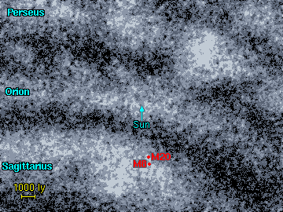
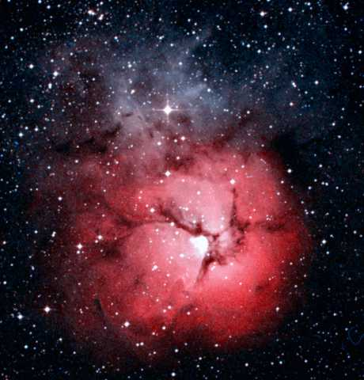

يعتبر سديم البحيرة و سديم الورقات الثلاث من السدم الشهيرة في كوكبة القوس، و يمكن رؤيتها بالعين المجردة في منطقة مظلمة. و من السهل رؤيتها بالمنظار الثنائي العينين. و تظهر الصورة هذين السديمين على خلفية نجمية كثيفة في ذراع القوس من المجرة. من الواضح أن سديم البحيرة (M8) الواقع إلى الجنوب من سديم الورقات الثلاث(M20)، أكثر لمعانا و حجما.
في الجدول لائحة بهذه السدم في تلك المنطقة، و السدم الرئيسية الوحيدة هنا هما سديم البحيرة و سديم الورقات الثلاث. جميع البقع السديمية اللامعة في هذه اللائحة تتبع لسديم البحيرة. المسافة إلى سديم الورقات الثلاث غير مؤكدة. فعلى الرغم من ارتباط هذا السديم بعنقود نجمي، لكن تقديرات لقيمة المسافة لهذا العنقود متغايرة بشكل كبيرما بين 2700 و حتى 5200 سنة ضوئية. قيمة 4000 سنة ضوئيةتعد مسافة معقولة لكل من السديم و العنقود النجمي.
1 2 3 4 5 6 7 8
Catalogue Equatorial Galactic Size Type Distance Size Other Names
Number Coordinates Coordinates (arcmins) (ly) (ly)
RA (2000) Dec l° b°
---------------------------------------------------------------------------------------
NGC 6514 18 02.3 -23 02 7.0 -0.2 20' RE 4000 25 M20, Trifid nebula
NGC 6523 18 03.8 -24 23 6.0 -1.2 45' E 4350 55 M8, Lagoon nebula
NGC 6526 18 04.1 -24 26 6.0 -1.3 40' E 4350 50 NGC 6533
IC 1271 18 05.2 -24 25 6.1 -1.5 20' E 4350 25
IC 4678 18 06.6 -23 57 6.7 -1.6 30' E 4350 35
IC 4681 18 09.1 -23 26 7.4 -1.8 3' E 4350 4 IC 4684
IC 1274 18 09.8 -23 39 7.3 -2.0 6' E 4350 8 IC 1275
NGC 6559 18 10.0 -24 07 6.9 -2.3 8' E 4350 10
|
العمود 1: إسم السديم النظامي في المصنف. العمود 2: إحداثيات المطلع المستقيم و الميل - حولية فلكية للعام 2000. العمود 3: إحداثيات الطول (l) و العرض (b) المجريين. العمود 4: الحجم الزاوي للسديم بالثانية القوسية. العمود 5: نوع السديم E = إصداري, R = إنعكاسي. العمود 6: المسافة التقريبية إلى السديم. العمود 7: الحجم التقريبي للسديم مقدرا بالسنة الضوئية. العمود 8: الاسم البديل للسديم.
في الجدول أدناه لائحة بالعناقيد التي يحتمل أنها قريبة من السديمين. NGC 6514 عنقود نجمي مرتبط بسديم الورقات الثلاث، NGC 6530 عنقود نجمي مرتبط بسديم البحيرة. وفق المصنفات الحالية أعطيت المسافة إلى العنقود NGC 6514 بما يقدر ب 2700 سنة ضوئية. و إذا كانت المسافة على ما ذكر، فإن نجوم التتابع الرئيسي في ذلك العنقود يجب أن تكون أكثر لمعانا بمقدار قدر واحد (1) من نجوم العنقود NGC 6530 - و لا أجد أي دليل على صحة ذلك، و ربما المسافة المقدرة ب 4000 إلى 5000 سنة ضوئية تبدو أكثر منطقية (وجود الغبار الكوني في هذه المنطقة يخلق صعوبات لتأكيد ذلك)
1 2 3 4 5 6 7
Catalogue Equatorial Galactic Size Distance Age Other Names
Name Coordinates Coordinates (arcmins) (ly) (million
RA (2000) Dec l° b° years)
---------------------------------------------------------------------------------
NGC 6469 17 53.3 -22 17 6.6 +2.0 7' ? ?
NGC 6506 17 59.9 -24 41 5.3 -0.6 5' ? ? Ruprecht 138
Trumpler 31 17 59.9 -28 10 2.2 -2.3 5' 3200 740
Bochum 14 18 02.0 -23 41 6.4 -0.5 2' 1900 10
NGC 6514 18 02.8 -22 58 7.1 -0.3 28' 2650 23 M20
NGC 6520 18 03.5 -27 53 2.9 -2.8 5' 5150 53
NGC 6531 18 04.3 -22 29 7.7 -0.4 14' 3950 12 M21
NGC 6530 18 04.6 -24 22 6.1 -1.3 14' 4350 7
NGC 6546 18 07.4 -23 18 7.3 -1.4 14' 3050 71
IC 4685 18 09.3 -23 59 7.0 -2.2 39' ? ? Collinder 367
NGC 6568 18 12.8 -21 36 9.4 -1.7 12' ? ?
NGC 6583 18 15.9 -22 08 9.3 -2.5 5' ? ?
|
العمود 1: إسم العنقود النجمي النظامي في المصنف.
العمود 2: إحداثيات المطلع المستقيم و الميل - حولية فلكية للعام 2000.
العمود 3: إحداثيات الطول (l) و العرض (b) المجريين.
العمود 4: الحجم الزاوي للعنقود النجمي مقدرا بالثانية القوسية.
العمود 5: المسافة إلى العنقود النجمي.
العمود 6: العمر التقريبي للعنقود النجمي مقدرا بملايين السنوات.
العمود 7: الاسم البديل للعنقود النجمي.
References: Dias W, Alessi B, Moitinho A, L�pine J, (2002). New catalogue of optically
visible open clusters and candidates. Astron and Astrophys, 389, 871.
أدناه خريطة لهذين السديمين، و يظهر سديم البحيرة ممتدا عرضا على مسافة درجتين قوسيتين في السماء(حوالي 150 سنة ضوئية) و السديم المجاور له و يدعى (M20) او سديم البتلات الثلاث و هو أصغر منه و يعرف أنه جزء من غيمة جزيئية منفصلة.
هذه صورة لسديم البحيرة ، و تظهر هنا المنطقة المركزية لهذا السديم. و إذا كان السديم على بعد 4300 سنة ضوئية فإن لهذه الصورة تمثل 75 سنة ضوئية عرضا. يتوهج السديم بسبب وجود نجمين مرئيين بالعين المجردة في السديم (7 و 9 Sagittarii)و المسؤولة عن تأيين الغاز داخل السديم.
|  | يتواجد السديمان في ذراع القوس من المجرة و تعتبر المسافة إلى سديم البتلات الثلاث غير مؤكدة، و لكن المؤكد هو وجوده في ذراع القوس المجري، و يحتمل أنه قريب بما يكفي من سديم البحيرة. |
| و هو سديم فتي متكدس و بقطر يبلغ 25 سنة ضوئية أي ما يعادل "15000 مرة ضعف قطر المجموعة الشمسية" . و الطبقات الغبارية العاتمة في السديم تقسمه إلى ثلاثة أجزاء القسم السفلي من السديم هو سديم إصداري لامع بلون وردي ميز، و القسم العلوي من السديم هو سديم انعكاسي بخصائص لونية زرقاء. |  M20. Image size: 0.34°x0.35°. DSS image. |